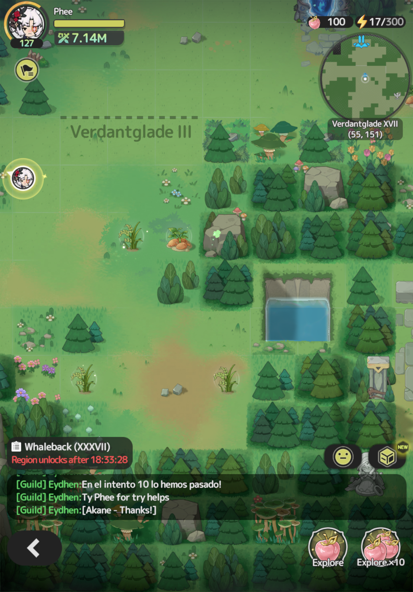
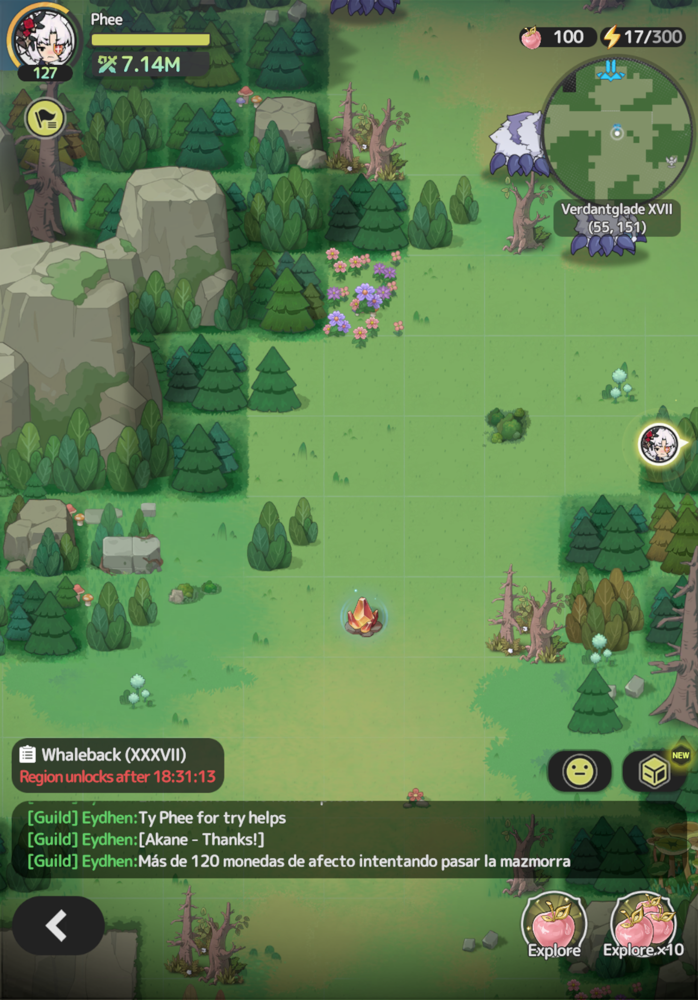
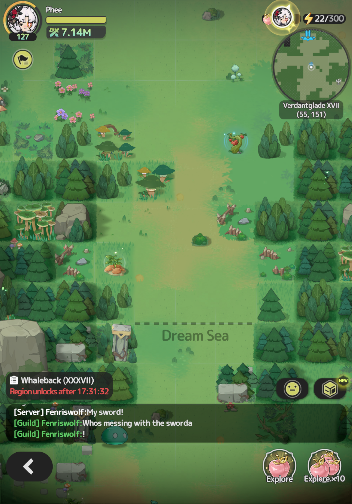
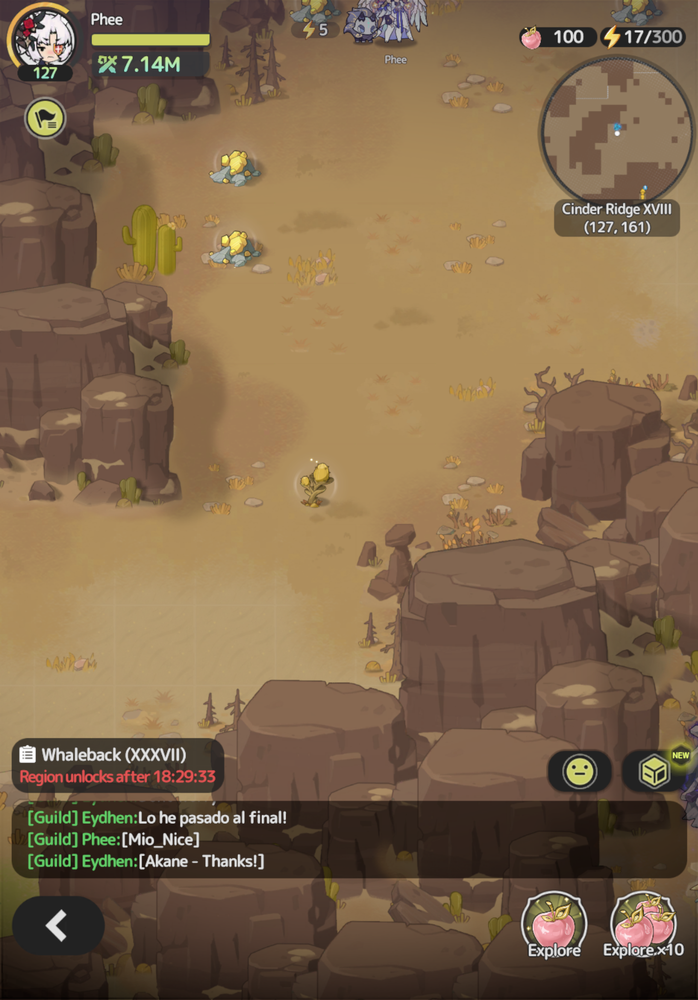
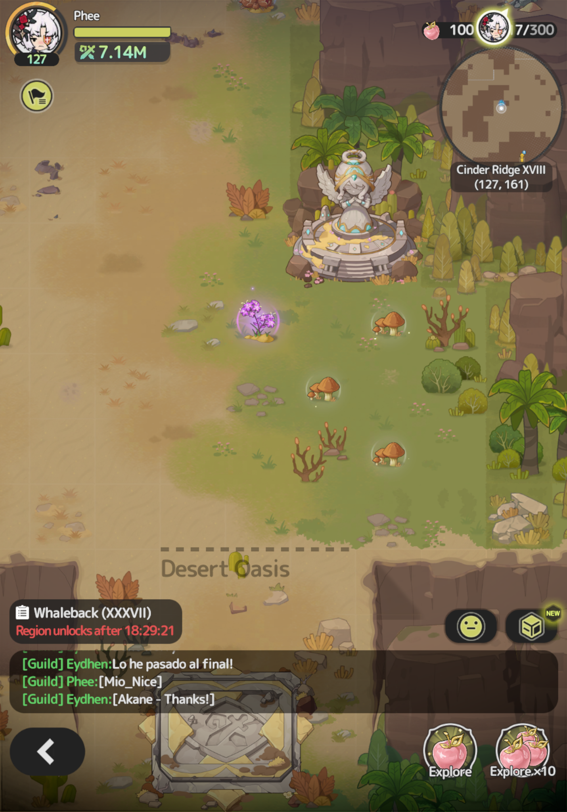
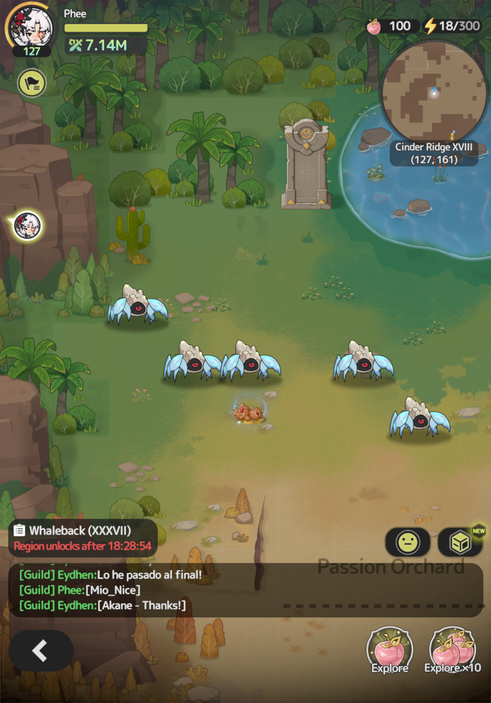
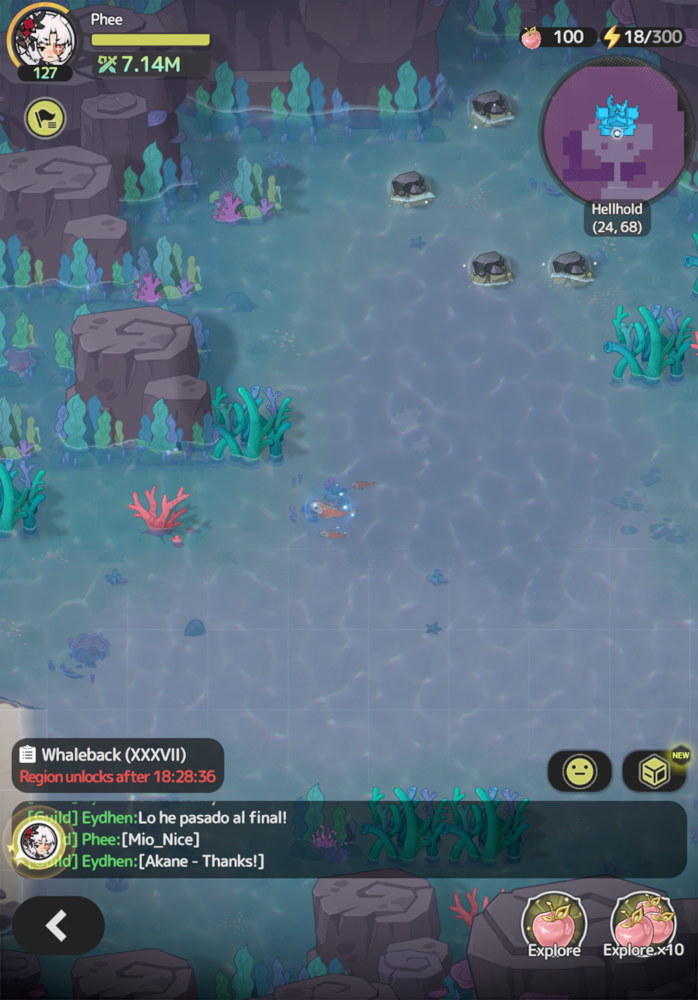
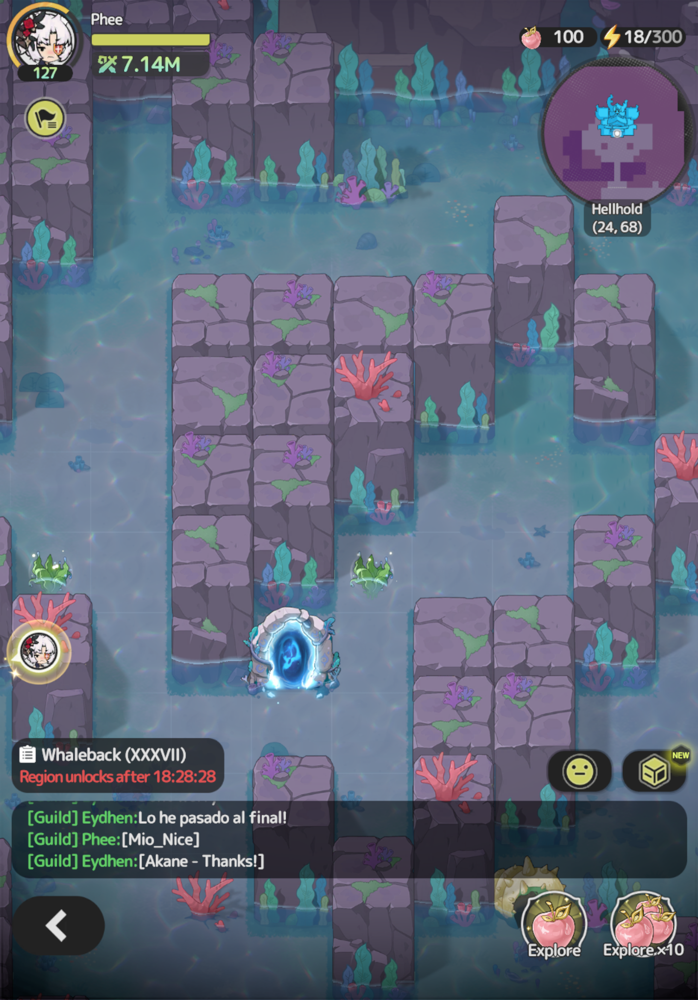
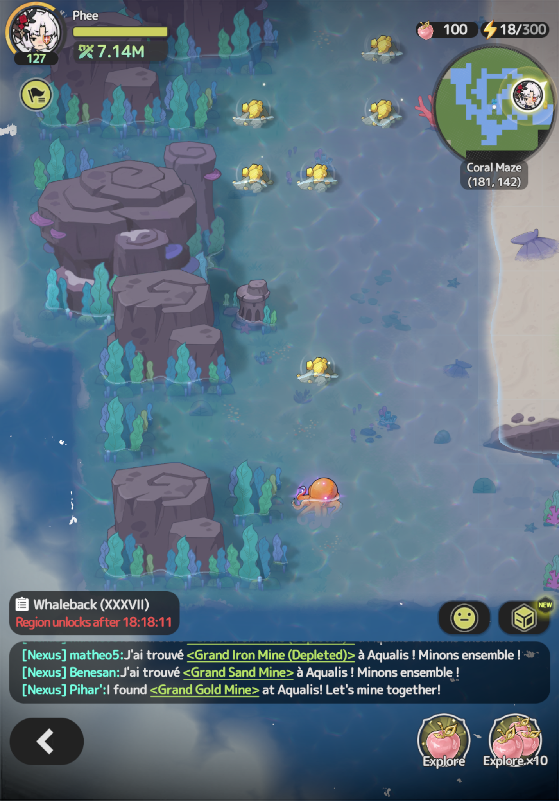

Sword X Staff Food System
Intro
The food system in SxS is an overlooked in-game, mainly f2p system to increase stats during battles and grant permanent stats depending on the type and rarity of the food recipe.
First, recipe materials can and should be farmed daily from each of the world maps in game.
There are daily caps for each level of rarity of food items: normal, rare, and epic. There are also mining nodes for the refined ore on all world maps, excluding the beginning zone. These mining nodes also have a daily cap.
The daily cap allows all players to have an opportunity to collect food materials and refined ore without having to fight other players trying to hoard these resources.
The rarity level of a material affects the number of that material on a map. Normal food items are plentiful. Rare items are less in number but easy to gather as well. Epic materials spawn 1–2 per map with a respawn timer.
Normal food material nodes can give either normal or rare quality materials, rare nodes can give rare or epic quality materials, and epic nodes can give epic or legendary quality food materials.
Lastly, each zone map also has mushrooms and green grains that are considered food materials, but there is no limit to how much you can farm these two materials. These materials are useful for the normal HP replenishment foods and some rare level recipes.
Food System Breakdown
The SxS food system grants permanent stats by eating for the following stats: Attack, HP, Def, and Speed.
Depending on your class and play style, some stats may not be as much a priority, but all these stats are helpful for surviving PvP and PvE content.
Recipes can be obtained from commission quests, the map town vendor, and from the auction. Only epic, legendary, and mythic recipes can be sold on the auction. Rare recipes can be bought from town vendors. Lastly, epic and legendary have only been seen in commission quests at this point in the game.
Each recipe is tied to a region based on its ingredients, which for now are Verdantglade, Cinder Ridge, and Aqualis. Loong Haven should also follow this pattern.
Verdantglade
Recipes
Legendary: Sunshine Scramble and Roundberry Cake
Epic: Honeyed Roast, Kanstein Burger, Sweet 'n' Sour Meat, and Rounbery Wine
Rare: Stewed Meat and Potatoes, Cheerful Greens, and Meat & Veggie Pot
Items to Farm
- Refined Ore
- Potato — Normal
- Rounberry — Rare
- Bird Egg — Epic
Cinder Ridge
Recipes
Legendary: Solar Halo and Curry Feast
Epic: Fruit Glazed Stew, Tangine Pot Stew, Roasted Meat with Chestnuts, and Toasted Sweet Nut
Rare: Mushroom and Meat Skewers, Mushroom Soup, and Prickly Refesher
Items to Farm
- Refined Ore
- Pear — Normal
- Chestnut — Rare
- Oasis — Epic
Aqualis
Recipes
Legendary: Lucky Sashimi
Epic: Ocean's Bounty Platter and Fish Tempura
Rare: Ocean Greens, Verdant Sushi, and Oden
Items to Farm
- Refined Ore
- Leaf — Normal
- Fish — Rare
- Octopus — Epic
Other yet to be discovered recipes for Aqualis may appear in the future and this guide will be updated accordingly.
Special note: Any water location can spawn fish and octopus. Leaf can spawn on land or water. Neither fish nor octopus will spawn on land areas.
Food Material Screenshots by Map
Verdantglade




Cinder Ridge



Aqualis



Closing
I have included a number of screenshots with this guide to show what the food material nodes look like on the map, what the cap message looks like when farming, and some locations for the epic grade food materials. These locations are not exhaustive.
If you have any questions or need additional information, feel free to @Phee in Discord or PM Phee in game.